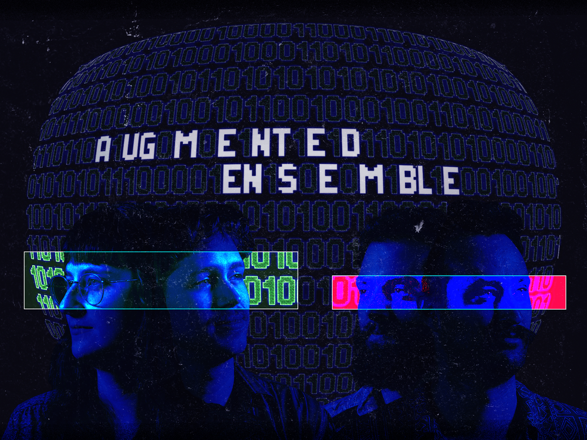

Augmented Ensemble
Augmented Ensemble creates and performs electroacoustic music written specifically for its members: Martin Daigle, Monica Ouellette, Miguel Dumaine, and Jérémie Poitras. Working within the experimental lineage of new music, the ensemble explores contemporary classical, jazz, improvisation, and live-electronics.
Our practice expands the "game piece" tradition into a visible, real-time audiovisual system in which musical decisions are shaped by the game's rules. Performance logic emerges through a combination of chance operations, performer input, and interactive audiovisual processes projected for performers and audiences alike. This approach makes the improvisation more unpredictable and pushes the musicians out of their comfort zone, as John Zorn intended, while still keeping the audience entertained and able to follow the musicians' progress. The music, visuals, and game mechanics are shaped by our Acadian identity and our appreciation for humour and absurdity — qualities rooted in who we are and where we come from, and structural elements of the work we create.
At its core, the ensemble is committed to making experimental music accessible through the audiovisual element. Our concerts are framed as presentations to potential funders, where the ensemble performs as both musicians and presenters of a functioning startup company, inviting audiences into a space that encourages interaction and participation. The result is something between a concert and a startup pitch: earnest, functional, and a little absurd.
This project is funded by the Canada Council for the Arts and Arts NB, and is supported by mentors John Hollenbeck, Nicole Lizée, Fabrice Marandola, Michael Reichman, Anders Åstrand, Raphael Dely, and Eliot Britton.
ChvalBinaire
QuartetEmulator